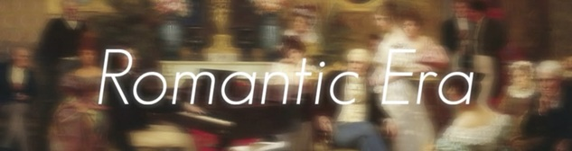
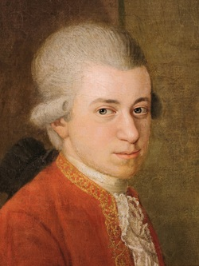
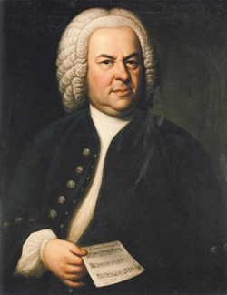
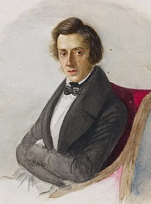

"Where every note tells a story "
Classical music has evolved throughout history with each era introducing it's own style of unique instruments, sounds and composers. Select an era to find out about that period and its composers.
Vienna (City in Austria) is widely known as the capital of music due to it's rich musicial history and association with famous composers like mozart and beethoven. Who lived and performed there making Vienna one of the world's most influential music cities.
1600 - 1750
The baroque era was known for it's complex, ornate and dramatic style of european music that was composed between 1600 - 1750, composers usually compose these pieces for high courts, churches and orchestras.
1750 - 1820
The classical era was known for it's more balanced and elegant melodies that was composed between 1750 to 1820. It shifted away from the highly complex baroque era, making music easier to follow. Composers now write symphonies and sonatas for the pubilc and royal courts.

1820 - 1900
The romantic era was more focused on expression, emotion and indiviualism. Composers wrote music that were dramatic and powerful to express feelings. Orchestras grew bigger and compositions became more challenging as it was more imaginative and expressive.

1756 - 1791
Wolfgang Amadeus Mozart was an Austrian composer of the Classical era. As a child prodigy, he began composing music at the age of 5 and composed more than 600 works. His music is admired for it's balance, elegance and beauty.

1685 - 1750
Johann Sebastian Bach was a German composer during the Baroque era. He is regarded as one of the greatest composers in history because of his complex harmonies. Although he was not widely famous during his lifetime, his music later became highly influential.

1810 - 1849
Frédéric Chopin was a Polish composer and pianist during the Romantic era.. He composed almost exclusively for the piano, creating expressive and emotional works.
Take a listen to these 3 famous and reccomended pieces , Also try out the rhythm tester below just press a or d when it hits the red zone while listening to the music.
Now Playing : None
Composer : Johann Pachelbel
Composer : Ludwig van Beethoven
Composer : Frédéric Chopin
Click play on one of the tracks and press on a and d when the note hits the red line
score : 0